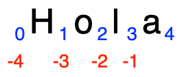

1. Fundamentos del lenguaje
1.1. Introducción
El lenguaje Python es un lenguaje interpretado, de propósito general, de código abierto y multiparadigma que fue diseñado originalmente por el desarrollador holandés Guido van Rossum a principios de los años noventa. La intención de Guido era crear un lenguaje de scripts, fácil de programar y que fuera legible, por lo que se utilizan sangrías para dar legibilidad al código y estas forman parte del lenguaje. De hecho, el nombre del lenguaje es en honor al grupo inglés de comedia Monty Python.
Empezemos directamente con un ejemplo de código analizando las diferencias que vemos respecto a otros lenguajes compilados como C# o Java:
x = 34 - 23 # Comentario
y = "Hola" # Otro comentario
z = 3.45
if z == 3.45 or y == "Hola":
x = x + 1
y = y + " Mundo" # Concatenación de cadenas
print(x)
print(y)
Echando un vistazo general al programa, nos llama primero la atención el hecho
de que no se importan algunas librerías al inicio del programa. Por ejemplo,
para la entrada y salida de datos a la consola. También notamos que al declarar
las variables no especificamos explícitamente cuál es su tipo de dato. Tampoco
tenemos que insertar nuestro código en algún método especial como main o
agregarlo dentro de alguna clase. Funciona como un script. Veamos línea por
línea.
Los nombres se atan a objetos
En la primera línea vemos la declaración de una variable llamada x a la cual
se le asigna el resultado de una resta entre dos números enteros. Aquí
encontramos la primera diferencia: en Python las «variables» no tienen un tipo de
dato, son simplemente nombres o etiquetas que hacen referencia a objetos. Los
objetos por su parte, sí tienen un tipo de dato. Entonces, en esta línea, el
resultado de la operación se almacena en memoria en una dirección
específica, una referencia. Lo que sucede entonces es que el nombre x se ata a
la referencia del objeto entero que se crea de la operación 34-23, el 11 en la memoria.
Esto es distinto al concepto de variable en otros lenguajes. Por ejemplo, en C# las
variables tipo valor reservan un espacio en la memoria donde se guarda literalmente el valor
que contienen, y los valores deben ser del tipo correspondiente. Si yo declaro una
variable como entera de 16 bits, solo puedo almacenar en ella objetos de este tipo.
Volviendo al ejemplo, el tipo de dato al que hace referencia el nombre x después de la asignación,
es temporalmente int, pero en otro momento, podríamos
atar el nombre x a un objeto diferente de otro tipo de dato. Por ejemplo,
x = 2.3 o x = "Hola". De nuevo, los objetos en memoria son tipo float y string
respectivamente y nuestra etiqueta x se puede atar a cualquiera de ellos sin
ningún problema. Vemos entonces que se atan los nombres y y z a la cadena de caracteres
"Hola" y al flotante 3.44 respectivamente.
Nota
En este texto utilizo un léxico que debería entender un programador con algo de experiencia. Recuerda que este es el público al que va dirigido el libro. En caso de que haya algunos pocos términos que no tengas claro su significado, no hay problema, investiga un poco y te debería quedar claro.
Python es dinámico
Algunos programadores pueden ver esta funcionalidad de Python como algo peligroso y
realmente lo es. Podemos equivocarnos fácilmente pensando que x hace
referencia a un objeto de tipo entero cuando por algún error puede referirse
a una cadena de caracteres o a un flotante y causar problemas en nuestro código.
El lenguaje nos protege hasta cierto punto ya que lanzará una excepción en caso
de que no esté definida una operación para un tipo de dato específico, pero en
general es algo que debemos tener en cuenta en este tipo de lenguajes dinámicos.
Otro problema que tenemos es que, a diferencia de los lenguajes fuertemente tipados, nuestras herramientas de programación en ocasiones no pueden ayudarnos desplegando, por ejemplo, la lista de atributos o miembros de un objeto, ya que no sabe a qué tipo de objeto hará referencia el nombre que estamos utilizando.
Otra diferencia importante la encontramos en este bloque de código:
if z == 3.45 or y == "Hola":
x = x + 1
y = y + " Mundo" # Concatenación de cadenas
print(x)
print(y)
El espacio es importante
Aquí definimos un bloque que se va a ejecutar si la condición del if es
verdadera. A diferencia de otros lenguajes, aquí definimos el bloque utilizando
espacios (una sangría). Es común llamarle indentación a esta sangría por el
nombre que recibe en inglés. Entonces, el bloque inicia al cambiar la
indentación y debe mantenerse al saltar de línea y termina cuando regresamos la indentación
al nivel anterior.
Indentación consistente
En el ejemplo vemos que la condición no tiene indentación, pero el bloque de
código que se ejecutará en caso de ser verdadera consta de dos líneas. Estas
líneas tienen una indentación consistente de cuatro espacios cada una. Para
terminar el bloque, simplemente escribimos una nueva línea que no contenga los
espacios. Por ejemplo, la instrucción print(x).
Cuatro espacios es buen estilo
La indentación puede hacerse utilizando la tecla tabulador (tab), pero se
recomienda que no se utilicen caracteres de tabulación y en su lugar se
reemplacen automáticamente por cuatro espacios. Esta es una capacidad que tienen
los editores de código y por lo regular se hace por defecto para los archivos
con extensión .py utilizados para los scripts de Python. La convención de
utilizar cuatro espacios la establece la [PEP 8](https://peps.python.org/pep-0008/),
en donde podemos encontrar las convenciones utilizadas por los programadores de las librerías
estándar de la distribución principal de Python. Las siglas PEP vienen del inglés
Python Enhancement Proposal (Propuesta de Mejora para Python). Un PEP es un
documento público que brinda información a la comunidad sobre alguna nueva
característica o sugerencia de mejora para el lenguaje.
Siguiendo con el código, vemos también que los operadores lógicos (and, or,
not) son palabras y no símbolos como en ciertos lenguajes. Al igual que en la
mayoría de los lenguajes, la concatenación de cadenas de caracteres se hace con
el operador de adición. Para operaciones con otro tipo de objetos, los
operadores (+ - * /) funcionan como siempre.
Otra característica importante es que la función para imprimir en la consola es
print y no tuvimos que agregar una librería para acceder a su funcionalidad.
Ya viene de fábrica. De hecho, Python incluye muchas funciones de este tipo
dentro del lenguaje. Utilizaremos muchas de ellas más adelante.
Baterías incluidas
Esto es parte del lema de baterías incluidas de Python, que se refiere a que el lenguaje incluye una extensa y muy útil colección de librerías (módulos en Python) en la distribución estándar.
1.2. Tipos de datos básicos
Enteros
A diferencia de otros lenguajes que incluyen distintos tipos de datos para
representar enteros de distintos tamaños, por ejemplo en C# el tipo de dato
long representa a un entero de 64 bits con signo, mientras que short
representa a un entero con signo de 16 bits. En Python solo tenemos un tipo de
dato entero int con una precisión arbitraria, capaz de almacenar enteros de
cualquier tamaño. Bueno, el tamaño solo está limitado por la cantidad de
memoria disponible en el sistema. Python evita el desbordamiento asignando
dinámicamente más memoria para almacenar el resultado de una operación entera.
Este costo computacional adicional hace que Python sea apropiado para el cómputo
científico, sacrificando las ventajas en desempeño que supone el tener enteros de
longitud fija.
Números con punto flotante
Los números con punto flotante, comúnmente llamados flotantes o floats,
incluyen un punto decimal y también son de tamaño arbitrario. Se pueden
representar utilizando la notación exponencial (E) indicando la décima
potencia. Por ejemplo, 21.3E-4 es equivalente a 21.3 * 10^-4.
Cadenas o Strings
En Python, una cadena o string es una secuencia de caracteres. Una secuencia
es una abstracción que veremos más adelante, cuando nos enfoquemos en estructuras
de datos; ahí veremos otros aspectos importantes de este tipo de dato.
Por lo pronto, podemos definir a una cadena como una colección
ordenada de caracteres útil para almacenar texto. Las cadenas se pueden
representar de distintas maneras: utilizando comillas dobles ("Hola"),
comillas simples ('Hola') y esto permite evitar cierto tipo de conflictos, por
ejemplo, la cadena "Carl's Jr." utiliza comillas dobles para evitar el
conflicto con la comilla simple que es parte del nombre Carl’s. Cuando tenemos
múltiples párrafos o necesitamos utilizar los dos tipos de comillas en el texto,
utilizamos comillas triples, ya sean dobles o simples:
"""
Este es un ejemplo del uso de
comillas triples para definir texto
que puede incluir comillas como "Carl's Jr." y
saltos de línea.
Indentación
Indentación
"""
En otra sección nos vamos a concentrar en la funcionalidad de los objetos tipo string; Python incluye muchos métodos para realizar operaciones sobre este tipo de datos.
Booleanos
Los valores de verdad en Python son representados explícitamente con los valores
literales True o False, verdadero y falso respectivamente, ambos deben
iniciar con mayúscula. El tipo de dato bool es un subtipo de int, por lo que
en contextos numéricos True equivale a uno y False a cero
respectivamente. También existen otras formas implícitas de representación de
estos valores de verdad cuando se utilizan operaciones lógicas. Por ejemplo, una
cadena vacía es equivalente a False y una colección de datos con cierto número
de elementos es equivalente a True. Veremos ejemplos de esto más adelante.
Comentarios
Python no cuenta con una sintaxis para definir comentarios que abarquen múltiples líneas. En este caso se pueden utilizar comillas triples para comentar múltiples líneas. Si un valor literal no se asigna a un nombre, este es ignorado por el intérprete de Python.
Este tipo de comentarios también se utiliza para documentar el código en situaciones específicas. Por ejemplo, se puede incluir una cadena de documentación en la primera línea de una función o clase.
def suma(x, y):
"""El docstring. Esta función
regresa la suma o concatenación de dos cadenas, es
importante ya que blah blah blah."""
return x + y # Comentario aquí...
Los comentarios de Python son línea por línea y se especifican con el símbolo de
almohadilla (#). En una línea, todo lo que está a la derecha de # es un
comentario.
Literales
En los ejemplos anteriores utilizamos valores literales de los tipos de datos que ilustramos. Es importante reconocer que estos valores representan datos u objetos específicos de cierto tipo de dato. Entonces, en los ejemplos anteriores, le definíamos nombres, mediante la asignación (o atado) a ellos de un valor literal.
Para terminar esta sección, vamos a representar valores literales de los tipos de datos básicos de Python:
Entero (
int):791926378172346918273469128374619283,2Flotante (
float):34.3,0.33Cadena (
str):"Python es un lenguaje dinámico",'Juan',"Leí el libro 'Pedro Páramo'."Booleano (
bool):True,False
El valor especial None
La constante None es utilizada para indicar la ausencia de valor o un valor nulo.
Tiene su propio tipo NoneType. De manera similar al valor NULL en bases de datos,
el valor None no es igual a cero, False o vacío, aunque se considera False en
condiciones booleanas. Se puede utilizar para definir un nombre que no hace referencia
a un objeto todavía. Por ejemplo:
x = None
print(x)
En este caso x existe aunque el objeto al que está atado es None. Esto
significa que no está atada a un valor todavía. El intérprete no imprime nada
cuando imprimimos None.
1.3. Funciones
En esta sección veremos cómo definir funciones en Python. Estas nos permiten crear abstracciones funcionales que nos permiten descomponer las tareas involucradas en la resolución de problemas complejos. En Python no es necesario que las funciones estén declaradas como miembros de una clase, como sucede en los lenguajes orientados a objetos puros. Podemos definirlas de manera independiente e incluso programar en Python siguiendo un paradigma funcional.
1.3.1. Definición de una función
Veamos una definición básica de una función que suma dos números:
>>> def suma(a, b):
... """ Esta función suma dos números"""
... return a + b
...
Este ejemplo lo estoy capturando directamente en el intérprete básico de Python,
ejecutado de manera interactiva. Una vez en el prompt >>>, puedes empezar a
capturar la función. Debes escribir el encabezado (la primera línea) y después
dar un salto de línea con la tecla Enter. Si te fijas, aparecen ahora tres
puntos (...) en lugar del prompt; debes ingresar cuatro espacios
manualmente para agregar la indentación. Al final del bloque, vamos a terminar
de capturar la función dando un salto de línea final sin agregar espacios. Esto
le dice al intérprete que ya terminamos de definir el bloque y, por lo tanto, la
función. Fíjate que el prompt regresa al modo normal >>>. Esto significa
también que no hubo error en la captura de la función y ya se encuentra en la
memoria lista para ser utilizada.
En otros lenguajes debemos ser muy específicos indicando el tipo de dato que
regresa una función o indicar de alguna manera, por ejemplo, con void, si la
función no devuelve ningún valor.
Por ejemplo, en C:
1int suma(int a, int b) {
2 return a + b;
3}
En Python no es necesario indicar el tipo de dato que regresa la función ni
tampoco el tipo de dato de los parámetros que recibe. Entonces, el encabezado de
la función se simplifica mucho, ya que solo indicamos con def el inicio de la
definición de la función. Indicamos el nombre (suma) y entre paréntesis una
lista opcional de parámetros separados por una coma (suma(a, b)). Por último,
algo muy importante, el símbolo de dos puntos (:) que marca el inicio del
bloque de código que define el cuerpo de la función.
Como vimos anteriormente, el bloque del cuerpo de la función debe estar indentado
utilizando cuatro espacios. El bloque termina con la única instrucción return a + b
indicando que queremos regresar como resultado la operación a + b, la suma de
los dos números a y b.
1.3.2. Ejecución de funciones
Una vez definida la función, podemos ejecutarla de esta manera, utilizando valores literales como parámetros:
>>> suma(2, 4)
6
En este ejemplo no estamos asignando el resultado de la suma a ninguna variable o imprimiendo el resultado. Sin embargo, el ejemplo está pensado para ejecutarse de manera interactiva utilizando el intérprete. En este caso, el resultado de la función se imprimiría automáticamente en la siguiente línea de la sesión. Por otro lado, si escribimos el código como un script y lo corremos no se imprimiría nada, pues no se ejecuta de manera interactiva.
Para ver el resultado si ejecutamos el script, podríamos escribir algo como:
# Esto está en un archivo llamado programa.py
# Lo puedes ejecutar con el intérprete así: python2 programa.py
resultado = suma(2, 4)
print(resultado)
# Aún más compacto
print(suma(0, 2))
Hay un detalle importante en nuestro código. Por alguna razón estamos asegurando
que a y b son valores numéricos. ¿Pero qué hay del caso que se muestra a
continuación?
>>> suma('hola', ' mundo')
'hola mundo'
El resultado sería 'hola mundo', la concatenación de las dos cadenas de
entrada. Esto resalta el punto que habíamos considerado anteriormente: no
debemos asumir que los nombres estarán atados a objetos de cierto tipo.
1.3.3. Anotación de tipos
Desde la versión 2.5 se le agregó la anotación de tipos (type hints o type annotations). Estas anotaciones nos permiten especificar como en otros lenguajes, el tipo de dato de los parámetros y el del valor que regresan las funciones. El problema es que no son obligatorias y no tienen un efecto en tiempo de ejecución. Python no vigila que los datos enviados o regresados sean los correctos. Ejemplo:
def suma(a: int, b: int) -> int:
return a + b
Aquí, a y b se anotan como enteros (int), y -> int indica que la función
devuelve un entero. Estas anotaciones son utilizadas por herramientas de
edición y librerías para alertarnos de manera estática de posibles errores en
nuestro código. En otra sección veremos el uso del método type() incluido de
fábrica para inspeccionar en tiempo de ejecución el tipo de dato de una
variable, lo que nos permitirá verificar que los parámetros sean del tipo
correcto. Por lo pronto, puedes investigar este método e intentar validar que
solo se reciban y regresen valores enteros.
1.3.4. Las funciones siempre regresan un valor
En el caso de que no especifiquemos una instrucción de return, la función
regresará el valor de None de manera automática.
Ejemplo de una versión interactiva de esta sección:
Python 2.11.5 (main, Sep 11 2023, 08:31:25) [Clang 14.0.6 ] on darwin
Type "help", "copyright", "credits" or "license" for more information.
>>> def suma(a, b):
... return a + b
...
>>> suma(1, 3)
4
>>> suma('hola ', 'mundo')
'hola mundo'
>>> exit()
1.3.5. Las funciones son ciudadanos de primera clase
Cuando decimos que en un lenguaje de programación las funciones son ciudadanos de primera clase (first-class citizens), significa que las funciones tienen el mismo estatus que otros tipos de datos como los enteros, cadenas o flotantes.
Esto significa que las funciones:
Se pueden asignar a variables
Se pueden pasar como parámetros a otras funciones
Se pueden regresar como resultado de otras funciones
Se pueden almacenar en estructuras de datos como listas, diccionarios, etc.
Este es un concepto fundamental en la programación funcional que veremos más adelante. Veamos un ejemplo:
>>> def por_tres(a):
return a * 2
>>> def aplica(f, a):
return f(a)
>>> aplica(por_tres, 6)
20
Este código se está ejecutando de manera interactiva, por eso se incluye el
prompt >>> del intérprete. En la primera instrucción definimos la función
por_tres, esta función triplica el valor que entra como parámetro. Ahora viene
lo bueno. La función aplica toma como parámetro una función (f) y regresa el
resultado de pasar como parámetro a esa función el parámetro a. Aquí vemos el
concepto de primera clase: podemos tomar como parámetro de una función otra
función. Esto lo hacemos en la tercera instrucción aplica(por_tres, 6).
Enviamos a la función aplica la función por_tres y nos regresa como
resultado el resultado de la función, en este caso 6 * 3. Este tema lo vamos a
retomar cuando veamos el tema de programación funcional.
1.4. Colecciones
El pionero de la computación y autor del lenguaje Pascal, Niklaus Wirth escribió un libro titulado Algoritmos + Estructuras de Datos = Programas, la idea básica del título sigue siendo muy poderosa y vigente:
«Un buen programa es el resultado de un algoritmo eficaz combinado con estructuras de datos adecuadas.»
Como programadores debemos saber elegir correctamente las estructuras de datos que vamos a utlizar en nuestros programas ya que esto puede simplificar o complicar mucho el diseno del programa.
1.4.1. Secuencias
Pyhton incluye de forma nativa, estructuras de datos abstractas para gestionar colecciones secuenciales de objetos:
- Tupla tuple
Es una secuencia inmutable de elementos. Los elementos pueden ser de diferentes tipos inluidas otras colecciones.
- Cadenas de caracteres str
Conceptualmente iguales a las tuplas pues también son inmutables, pero los elementos son caracteres y se definen de una manera distinta.
- Listas list
Una secuencia mutable de elementos, con mayor funcionalidad que las estructuras anteriores.
Este tipo de objetos tienen su equivalente en otros lenguajes por ejemplo, las listas se incluyen en C# con la clase genérica List<T> o ArrayList<E> en Java.
Los tres tipos de secuencias comparten cierta funcionalidad y tienen una sintaxis similar. Las operaciones que veremos a continuación, son aplicables a todas las colecciones tipo secuencia.
Las tuplas se definien como una lista de elementos separados por comas, y se encierran entre paréntesis:
>>> tu = (32, 'abc', 3.26, (20,30), 'xyz')
Las listas se definen igual solo que se encierran entre corchetes:
>>> li = [32, 'abc', 3.26, (20,30), 'xyz',]
Podemos también incluir al final una coma sin provocar problemas. Esto nos permite copiar y pegar elementos sin tener que preocuparnos por agregar o borrar la coma al final.
Como ya vimos anteriormente las cadenas de caracteres se pueden definir de varias formas:
>>> st = 'Hola Mundo'
>>> st = "Hola Mundo"
>>> st = '''Para definir este párrafo multi-línea
utilizamos triple comillas.'''
Podemos acceder a los elementos individuales de una tupla, lista o cadenas utilizando la notación de corchetes con índices. Como los arreglos clásicos de C#, Java, C.
>>> tu = (33, 'def', 4.56, (2,3), 'def')
>>> tu[1] # Segundo elemento de la tupla.
'def'
>>> li = ["abc", 34, 4.34, 23]
>>> li[1] # Segundo elemento de la lista.
34
>>> st = "Hola Mundo"
>>> st[1] # Segundo elemento de la cadena.
'e'
También podemos utilizar índices negativos, estos nos permiten indicar fácilmente la posición de los últimos elementos aunque no conozcamos el tamaño del arreglo.
>>> t = (23, 'abc', 4.56, (2,3), 'def')
Índice positivo: se cuenta de izquierda a derecha empezando en 0.
>>> t[1]
'abc'
Índice negativo: se cuenta de derecha a izquierda, iniciando en –1.
>>> t[-3]
4.56
1.4.2. Cortes slicing
Una funcionalidad muy importante que nos brindad las secuencias son los cortes. Un corte, regresa una copia del contenedor incluyendo un subconjunto de los miembros originales. Un corte se puede especificar con dos índices. Se empieza a copiar desde el primer índice y se detiene antes del segundo.
>>> t = (23, 'abc', 4.56, (2,3), 'def')
>>> t[1:4]
('abc', 4.56, (2,3))
También podemos utilizar índices negativos. Esto es de mucha ayuda para referirnos a los últimos elementos aún cuando ignoremos el número de elementos que tiene la secuencia.
>>> t[1:-1]
('abc', 4.56, (2,3))

En la figura podemos ver los puntos de corte de la palabra «Hola». Podemos observar que los puntos de corte están ubicados antes o después de los elementos en la secuencia y no coinciden con los índices de los elementos.
Cómo copiar una secuencia
Para indicar que el corte inicial es desde el punto inicial o cero, simplemente se omite el valor, por ejemplo: lista[:21]. Igual si queremos indicar que el corte se hará hasta el último elemento también se omite el límite superior lista[12:].
Para regresar una copia de toda la secuencia simplemente omitimos ambos límites [:]. Por ejemplo, para regresar una copia de la siguiente tupla:
>>> t = (23, 'abc', 4.56, (2,3), 'def')
>>> t[:]
(23, 'abc', 4.56, (2,3), 'def')
Recordemos que si asignamos simplemente un nombre a otro, no estamos regresando una copia. Estamos asignando la misma referencia a ambos nombres. En el caso de un objeto mutable como una lista, si hacemos un cambio utilizando una referencia este cambio se reflejará en todas las referencias, lo cual es normalmente un error. Veamos un ejemplo, para que quede clara esta idea:
>>> lista1 = [23, 'abc', 4.56, (2,3), 'def']
>>> lista2 = lista1
>>> lista1[0] = 'hola'
>>> lista1
['hola', 'abc', 4.56, (2,3), 'def']
>>> lista2
['hola', 'abc', 4.56, (2,3), 'def']
Como vemos en el ejemplo, al asignar lista2 = lista1 realmente ambos nombres están atados al mismo objeto lista en la memoria. Si hacemos un cambio en uno, por ej. lista1[0] = “hola”. Realmente parece que el cambio se hace en ambas «copias», pensar esto es un error ya que realmente ambos nombres aunque sean distintos hacen referencia al mismo objeto. Si vemos el contenido de la lista2 será igual a lista1 aunque aparentemente no la modificamos.